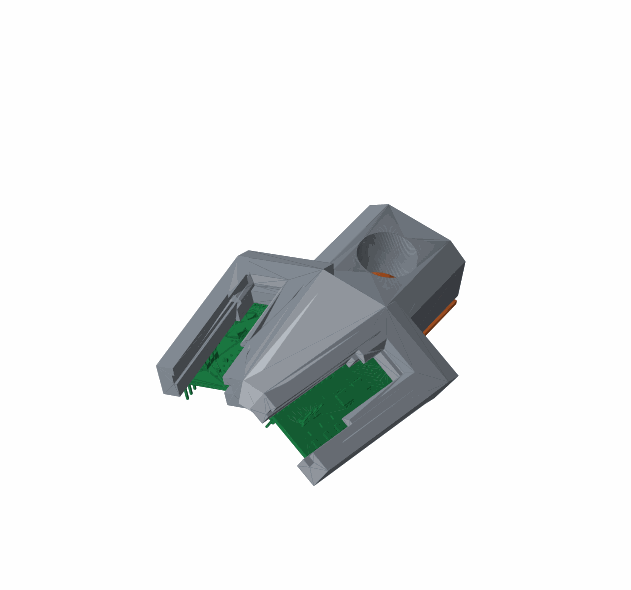

Assistive Navigation Helmet
A helmet that answers what the white cane cannot: what is at head height, what is approaching, and where exactly the thing you want is. It is not a mobility aid and not a substitute for a cane, a guide dog, or O&M training.
Two $6 ST VL53L8CX time-of-flight sensors sit on a bike helmet, yawed ±22.5° and seam-abutted into a ~90° × 45° depth field at 15 Hz, next to a fisheye camera and a BNO085 IMU. An ESP32-S3 streams depth and attitude over WiFi to a laptop in a backpack, which fuses them: segmentation and tracking name what is in frame, and the depth grid ranges it. Output is speech, spatialised earcons, and three coin motors at the temples and forehead. An assistant called Iris answers to its name, and a phone app shows the annotated feed.
The design rule the whole system rests on: CV names things; the depth grid never misses things. A detection’s range is the minimum over the depth zones it claims, never the mean, and any near zone that no detection claims is still announced as an obstacle. The classifier is allowed to be ignorant; it is not allowed to be the reason something goes unreported.
An 8 mm error that no rigid transform could remove
A residual that survives rotation, translation and scale is telling you the forward model is wrong, not the parameters.
Solving the depth-to-camera transform left a systematic ~8 mm residual against a sensor noise floor of 3.1 mm. Two signatures identified it: the error was per-pose rather than per-zone, and its size tracked how far the calibration board was tilted. A lateral ray error is invisible on a face-on board and leaks in proportionally as you tilt it. Root cause: a zone’s reported distance is a signal-weighted average over its cone, and the illuminator is brighter on the inner side of the outer zones, so their effective centre ray is pulled inward — fitted at ±13.4° where the geometry says ±16.9°. Two earlier measurements had been fighting over 34° versus 45° for a week; both were right, because one measured the zone’s bounds and the other its signal-weighted centroid.
Distance is perpendicular, not slant
A radially symmetric residual is a geometry-model signature, not a hardware defect.
Residuals showed corners −14 mm and centre +14 mm across poses. I chased a warped board, a radial sensor bias and crosstalk before testing the obvious: the sensor reports perpendicular distance, and I was treating it as slant range along the zone ray. On the same 23 poses, the slant reading gives 12.02 mm plane rms and a false 36 mm dome; the perpendicular reading gives 3.83 mm, which is noise. The same mistake was live in the firmware’s row-cosine table, biasing the outer rows about 8% while the haptics were running off it.
The research said the product was 30× too chatty
Chatter is the most cited reason people abandon devices like this, so silence is the default state.
The first callout engine narrated every 2 seconds. Reading the primary sources, including the actual constants in Microsoft Soundscape’s open-source callout generator, said that was badly wrong: never repeat an object inside 60 s, and treat silence as the resting state. No shipped product speaks distances while you walk, because proximity belongs in a repetition rate, and there is a two-item recall ceiling while walking. Person detection, which I had assumed was the point, is the least-wanted feature in user studies. So routine narration was deleted, distance moved into the tempo of a tick that speeds up as time-to-contact falls, and head-height obstacles became the product.
- Joint calibration ships at 5.5 mm rms across 39 poses and 1.15° from CAD, against a sensor noise floor of 3.1 mm
- Camera intrinsics at 0.30 px rms over 19 views; measured field of view 119.58° × 63.12°, which replaced an estimate that was 10° out
- A frame-convention error put the solve 179° from the CAD prior. Image-right is the wearer’s right, which is −X. Naming the observer rather than the side removed a whole class of sign errors
- Black foam at 756 mm read all 16 zones at 9.4% reflectance; a white wall at 958 mm lost 3 zones to specular glare. Visible colour does not predict near-infrared behaviour
- Every alert is logged, and hushing the audio within ten seconds of one counts as a vote that it was a false positive — directives excluded, since hushing during “stop” is panic, not a judgment
Where it stands: the full stack is built and runs end to end — dual depth, IMU, camera, fusion, speech, haptics, voice control and the phone app. Measured on the field laptop: ~10 fps segmentation with tracking, and a 104 ms median open-vocabulary door scan over 20 runs. The safety loop runs no neural inference at all; it is geometry at sensor rate. The false-positive instrumentation is built and verified synthetically, but no number from a real walk exists yet — the field walk test and the demo video are the next step.